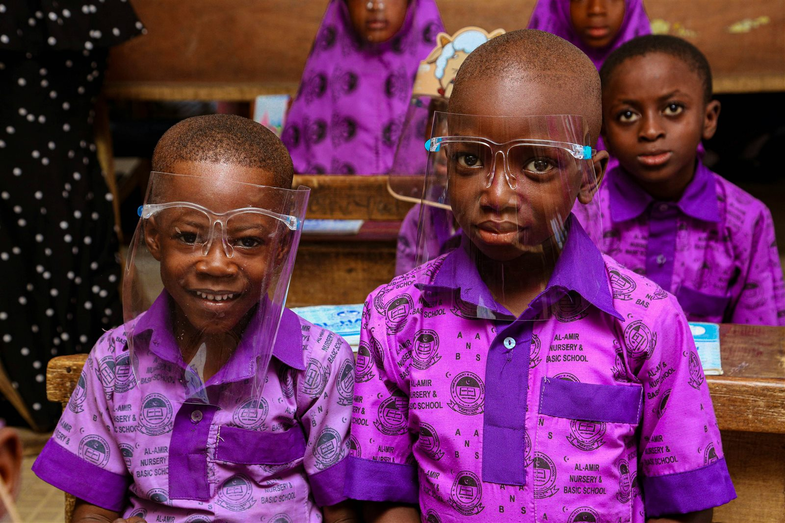

MWAMKO INITIATIVE
standing against SGBV
Encouragement, learning materials, and study support to help children keep building confidence.
Learn moreWhat we do
We are committed to nurturing children's potential by providing caring support, meaningful opportunities, and a safe place to grow.
Ask about our programmesIllustrative stock photography
Programmes & services
Our support is shaped around children's needs and delivered with dignity. Contact the Center to confirm current services and availability.
Encouragement, learning materials, and study support to help children keep building confidence.
Learn more
Practical care that supports children's wellbeing, stability, and sense of belonging.
Learn more
Positive opportunities to move, play, develop teamwork, and enjoy time together.
Learn more
Age-appropriate listening, encouragement, mentorship, and referrals to qualified support when needed.
Learn more
Opportunities for children to develop confidence, communication, and leadership abilities.
Learn more
Working alongside families and trusted community partners to strengthen support around children.
Learn moreThese are illustrative stock photographs, not images of Center participants or facilities.
Other ways we help
Share your time and skills through a supervised, approved opportunity.
Encouragement and positive guidance to help young people explore their strengths.
Building trusted relationships and support around children and caregivers.
Age-appropriate life and livelihood skills that support confidence and independence.
Find a meaningful way to help